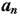

| Ray Through Glasses |
Suppose we put two panes of glass back-to-back. How many ways  are there for light rays to pass through or be reflected after changing direction n times ? Following figure shows the situations when the value of n is 0, 1 and 2.
It is a set of lines with an integer n where 0 <= n <= 1000 in each of them.
For every one of these integers a line containing as described above.
0 1 2
1 2 3